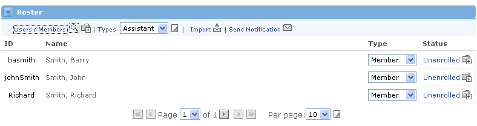
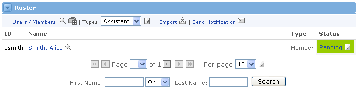
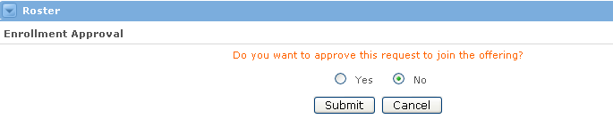

Searching for an Existing User
To search for a user to enroll in this offering, complete the following steps:
- Click the Add icon at the top of the Roster channel to access the search form.

2. Enter any combination of the person's first name, last name, or User ID in the appropriate text boxes.
3. Click the Submit button.

|
4. The channel will return a list of existing users who match the search criteria you entered. You can click the Add icon at the top of the channel again to change your search, if necessary. |
Enrolling into a Request / Approve Offering Users who want to enroll themselves into Request / Approve offerings must first get sponsor approval before they will be enrolled. To this end, the process is slightly different. To enroll into a Request / Approve offering, simply follow these steps: 1. Go to the Offering Subscription channel and search for the offering. |

4. When the sponsor views the Roster channel for this offering, they will see that your status is Pending . All they have to do is click on the link to initiate the approval process.

5. After clicking on the Pending link, the sponsor will be asked to confirm the enrollment approval. Simply select Yes and click the Submit button.

Unenrolling a User
If you decide that a user within an offering should not be enrolled, you can unenroll them quickly and easily. Here's how:
- From the main roster page, locate the user you want to unenroll.
- In the right column, click the Enrolled link or the Delete icon next to it. This will change that user's status from "enrolled" to "unenrolled."
- You will now see a confirmation page asking you if you're sure this is the user you want to unenroll. Select the Yes radio button and click Submit.
- You will now see the main roster view. Notice that the user is no longer enrolled.